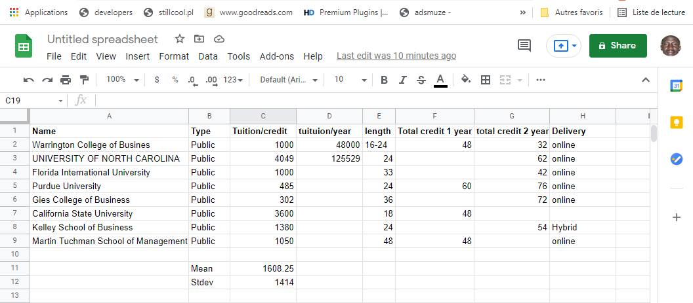
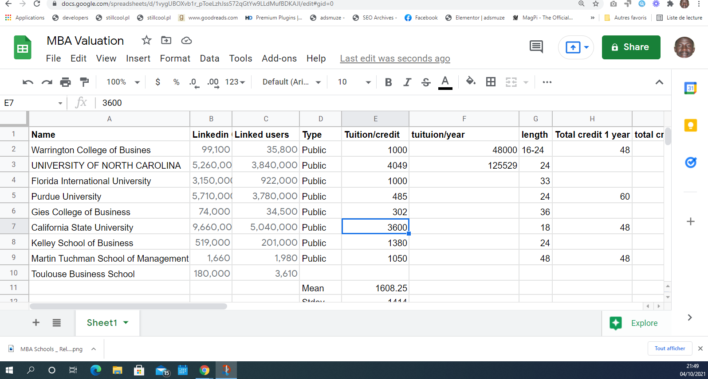
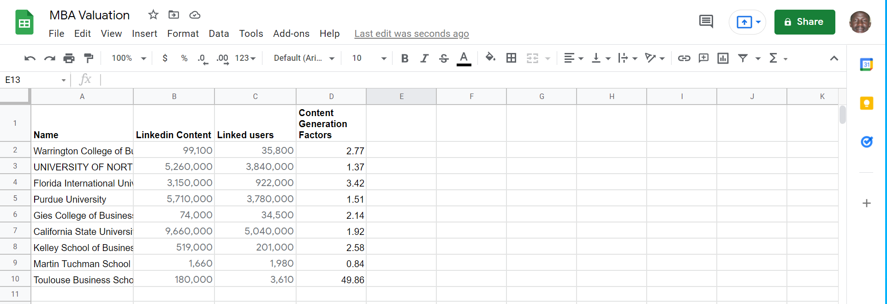
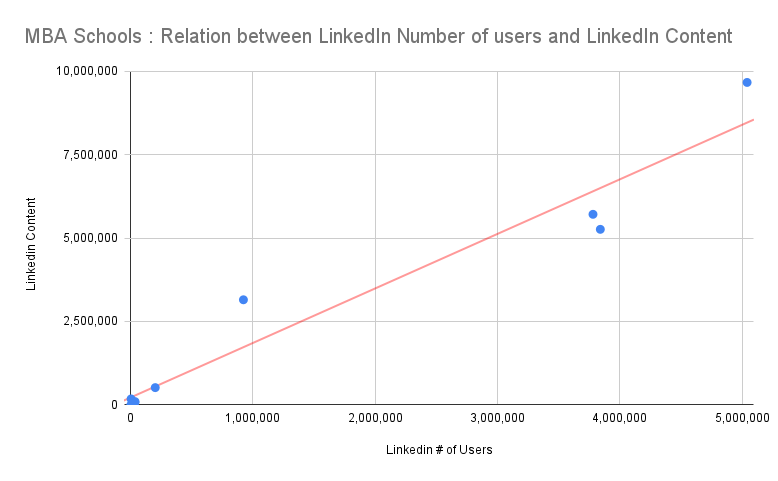

A Factor for Valuation of MBA Schools
User attention model for business valuation, all users are not the same

Some months ago I have introduced to you a new methodology of valuing business using what is called the user attention which is a measure of the amount of attention that a person gives to a given business but not only attention but also a commitment to contributing to the creation of values for the company or brand that this person cares about. This idea of user engagement is what fueled the revolution of User Generated Content that spawned many successful startups that once built was almost entirely driven by their users who are those who produce the content that is the raison d’etre of the platform behind the startups. Facebook, Twitter, and LinkedIn Have exploited this new trend of using people to participate into the business value chain by producing things that will be consumed by their peers. Then user or consumer attention is one of the most valuable resources that a company seek to own and advertizing was created for this purpose but the most important skill for getting the attention of people is marketing and exactly permission marketing, I mean marketing done with people not at people. The assumption of this business valuation model grounded on the estimation of the amount of attention, attention which is in my perspective different from awareness, that a company get from people is an estimation that will define the value of a company. Simply puts more a company get attention from people, meaning more people care about it, the more this company is valuable. This attention driven models use several inputs for estimating the level of user or consumer attention that a company hold as asset and one of them is related to the level of content and engagement that this company is getting from User Generated Content platforms and Social networks like Linkedin which will be chosen as example for showcasing a simple evaluation of the level of attention that some business schools have like how I had used these school in this article.
Linkedin is relevant to take into consideration for this simple valuation models because this social networks is professional social networks that target workers and companies and business schools are about executives who are or will be top managers of the companies targeted by LinkedIn. Then estimating the level of attention and also exposure that each business School get from Linkedin is a good parameter to take into consideration for our attention driven business valuation models that we will be building drip by drip with articles like that and maybe a whole books once all the parameters of the models are spotted and the models completed.
For the last article about Valution of business school here are the business school that were taken into account by this past analysis

I have added for each of these business school two parameters which are the number of content that are about them in Linkedin and the number of linkedin users with reference to each of these business schools respectively. Then the data set is now completed with these new pieces of data and shown below

As I have said in the paragraphs above attention is also about engagement of the person who care about the company that we are trying to price and that’s why in the subtitle fo this article I have said that all users aren’t the same because a consumers of a company who give so much attention to a business at a point that she or he is writing everyday a blog article about how this company is great is not the same as one who just buy from this company and nothing else. Then as we are focusing the implementation of our attention driven model to User Generation content with a focus on Linkedin, I introduced a factor that I call Content generation which is the ration between the estimated number of users on LinkedIn and the amount of content, let’s say exposure in LinkedIn. Given this new feature one could tell that students and alumni of Toulouse business school are more engaged at producing content on LinkedIn than the other business school but this factor is not enough for proving this intention because this value could simply mean that given its number of students and alumni, toulouse business school’s team is simply more performant at producing content about them in LinkedIn. Here are the data about the the attention that each of these business school are getting in linkedin

I have plotted the data using a scatter plot for you to see that there is a relation, a correlation between these value

I hope that you could see with these few number of datapoint that number of available content in linkedin about a business school is highly correlated with the number of students and alumni that this business school has in linkedin but what you could ask me is what about the valuation of the business school and this User of Student Content Generation factor?
Ok I guess that you are smart enough to see that Purdue University is a great and big University, I am not an expert about US higher Education but These piece of data show that purdue University has more alumni and student that Florida University then Purdue University should have more online exposure than Florida University but If you are asked to price these two Universities using the attention driven valuation model you should put a premium price on top of the average price that you have estimated for Florida because Florida University has a greater Student Content Generation Factor which means that the network of students and alumni as well as professors of Florida Internatinal University are more engaged in producing content online what means that they are better ambassadors and marketers of Florida international university than those of Purdue university. For a business having customers take the role of your marketing success is a factor of success and can lead to less marketing cost for growth that’s why considering this factor when valuing a business is something reasonable to do. But This is a simple valuation model that was intentended to show you what this attention driven valuation model is about.
A more comprehensive analysis and valuation using this User Content generation factor and other parameters with a more rich seth of business schools, games studio and other tech companies is in progress. I will be sharing the articles related to them here in DataDrivenInverstor and I hope that you will reach out to me if you could help with data and tools and I wish this introductory article helped you see something new or useful to you.